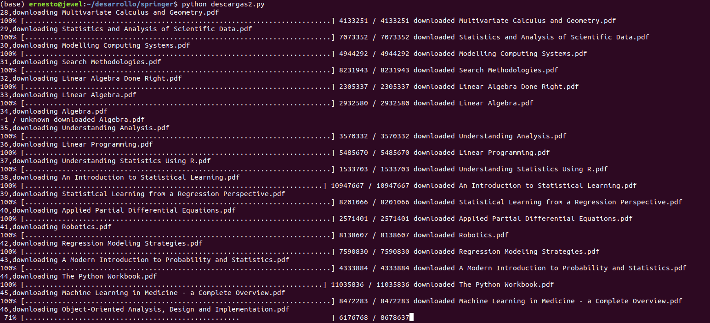

Descargar libros de Data Science de la editorial Springer usando Python.
Posted on Fri 01 May 2020 in Tutorial de Python • 3 min read
La editorial Springer ha liberado libros en pdf. En el enlace explican como descargar todos los libros en pdf usando una hoja de cálculo que contiene los libros, convierten en un dataframe de pandas y luego el script en sí de descarga de cada libro. Pero, en este caso hay otro enlace donde se tiene sólo los libros dedicados a Data Science y Machine Learning, dandole clic a cada enlace de la página.
Este artículo se basa en el script de descarga de los libros usando la hoja de cálculo pero en vez de usar la hoja de cálculo se descargarán los libros que están en el segundo enlace que son los dedicados a Data Science y Machine Learning. La diferencia es usar web scraping en vez de leer una hoja de cálculo y convertirla en un DataFrame.
Antes de empezar con el código, unas aclaraciones:
- Este script y artículo se basa en el artículo en ingles de descargas de los libros de Springer, usando Python.
- Los libros que descarga el script se encuentran en el artículo de descargas dedicadas a Data Science y Machine Learning.
- Investigando un poco los libros se podrán descargar hasta finales de Julio por lo que leí en Hipertextual
- Así que el script a continuación dejará de funcionar luego que la editorial los bloquee para descarga gratis. Si quedan libros que pueden descargarse luego de la fecha, es responsabilidad de la editorial (Springer).
Para utilizar el script es necesario tener Python 3.7 o superior e instalado request y wget:
pip install request wget
A continuación se muestra el código:
import requests, wget
from bs4 import *
from pathlib import Path
def ls3(path):
"""
Toma el path y lista los archivos que se encuentran en ese path.
:param: path: Ruta donde se encuentran los archivos a listar.
:return: list: Retoran la lista de archivos en el path.
"""
return [obj.name for obj in Path(path).iterdir() if obj.is_file()]
def main(url,path):
"""
Descarga los libros pasando el url de la página que contiene los enlaces.
:param: url: URL del sitio donde se encuentran los enlaces de los libros a descargar.
:param: path: Ruta donde se descargan los libros.
"""
pattern = "springer"
#Se realiza el get del URL inicial y se usa bs4.
html = requests.get(url)
soup = BeautifulSoup(html.text,features='lxml')
#Se captura los tags a
tags = soup('a')
#Se obtienen los enlaces de las descargas de los libros.
links = [str(tag.get('href',None)) for tag in tags if (str(tag.get('href',None)).find(pattern) != -1) and (str(tag.get('href',None)).find("link") != -1)]
#Se recorre cada enlace.
for i,link in enumerate(links):
#Se realiza el get del enlace
r = requests.get(link)
#Con bs4 se obtiene el nombre del libro a descargar
soup = BeautifulSoup(r.text,features='lxml')
ref = soup("h1")
name = str(ref).split("<h1>")[-1].split("</h1>")[0]
#Se define el url de descarga.
download_url = f"{r.url.replace('book','content/pdf')}.pdf"
#Se verifica que el libro ya no se ha descargado antes.
# Si no se ha descargado antes se descarga usando wget.
if f"{name}.pdf" not in ls3(path):
print(f"{i+1},downloading {name}.pdf ")
wget.download(download_url, f"./descargas/{name}.pdf")
print(f" downloaded {name}.pdf")
print("Download completed")
if __name__ == "__main__":
url = "https://towardsdatascience.com/springer-has-released-65-machine-learning-and-data-books-for-free-961f8181f189"
path = "/home/ernesto/desarrollo/springer/descargas/"
main(url,path)
A continuación se muestra una imagen del proceso de descarga de los libros:

Les dejo el enlace del repositorio en github del script enlace.
¡Haz tu donativo! Si te gustó el artículo puedes realizar un donativo con Bitcoin (BTC) usando la billetera digital de tu preferencia a la siguiente dirección: 17MtNybhdkA9GV3UNS6BTwPcuhjXoPrSzV
O Escaneando el código QR desde la billetera: